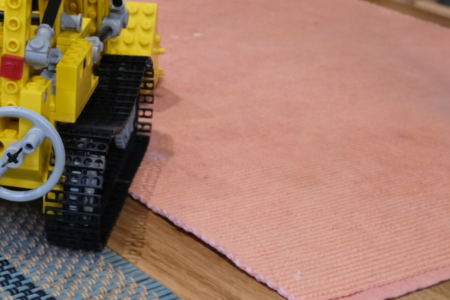
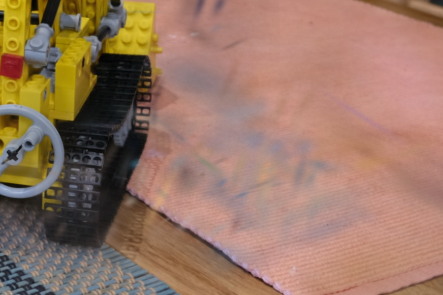
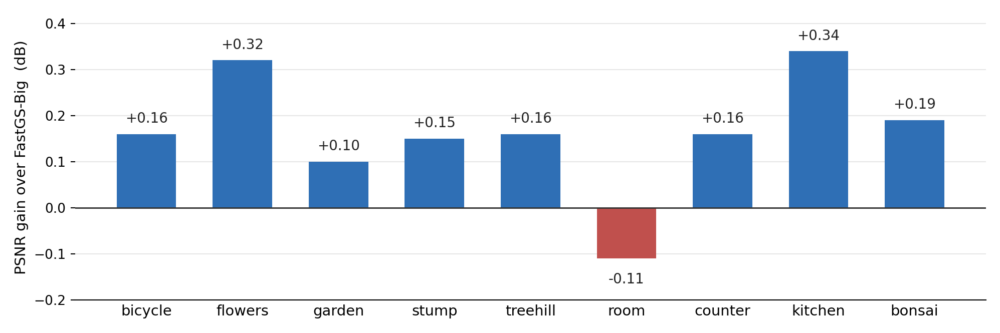
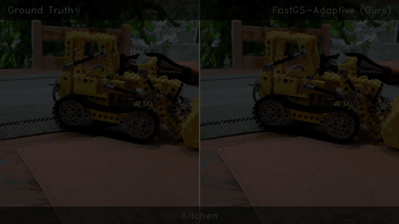
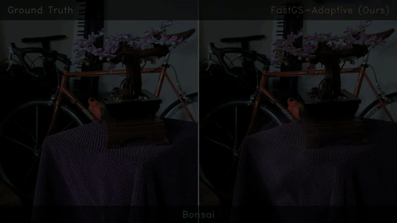
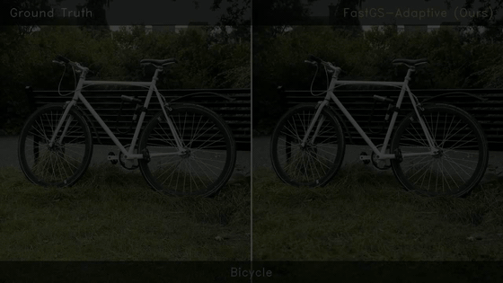

Novel-view rendering on Mip-NeRF 360. Ground truth left, FastGS-Adaptive right.
Drag to compare


FastGS-BigOurs
AESLAdaptive Edge-Structured Loss — modulates the per-pixel photometric penalty with a Sobel edge prior cached once per camera.
PSAPerceptual Structure-Aware densification — replaces the thresholded residual in the scoring rule with an edge-gated combination of photometric and local SSIM error.
Results
Best PSNR, SSIM and LPIPS on Mip-NeRF 360; best PSNR on all three benchmarks.
Method
Mip-NeRF 360
Deep Blending
Tanks & Temples
PSNR
SSIM
LPIPS
PSNR
SSIM
LPIPS
PSNR
SSIM
LPIPS
3DGS
27.53
.812
.221
29.71
.903
.241
23.71
.850
.170
Mini-Splatting
27.32
.821
.217
29.99
.907
.244
23.46
.844
.181
Speedy-Splat
26.91
.781
.295
29.42
.898
.272
23.38
.816
.242
Taming-3DGS
27.48
.794
.261
29.50
.894
.278
23.89
.833
.214
DashGaussian
27.73
.817
.218
29.65
.906
.246
24.00
.853
.178
FastGS
27.56
.797
.261
30.03
.901
.270
24.15
.839
.210
FastGS-Big
27.93
.820
.216
30.12
.907
.243
24.39
.855
.175
FastGS-Adaptive
28.09
.823
.211
30.31
.912
.244
24.49
.855
.180
Baseline figures are those reported in the corresponding publications.

Per-scene PSNR gain over FastGS-Big on Mip-NeRF 360. Eight of nine scenes improve.
More scenes

kitchen

bonsai

bicycle
BibTeX
@inproceedings{goshu2026fastgsadaptive,
title = {FastGS-Adaptive: Structure-Aware View-Consistent Densification
for Accelerated 3D Gaussian Splatting},
author = {Goshu, Hana L. and Wakjira, Tadesse G. and Lam, Kin-Man},
year = {2026}
}